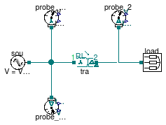
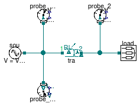

Package with example models
This package contains examples for the use of models that can be found in Buildings.Electrical.AC.ThreePhasesUnbalanced.Conversion.
Extends from Modelica.Icons.ExamplesPackage (Icon for packages containing runnable examples).
| Name | Description |
|---|---|
| Test for the AC/AC converter model | |
| Test for the AC/AC transformer model | |
| Test for the AC/AC transformer model with Delta-Delta configuration | |
| Test for the AC/AC transformer full model | |
| Test for the AC/AC transformer model with Delta-Wye configuration (step-down voltage) | |
| Test for the AC/AC transformer model with Wye-Delta configuration (step-down voltage) | |
| Test for the AC/AC transformer model with Delta-Wye configuration (step-up voltage) | |
| Test for the AC/AC transformer model with Wye-Delta configuration (step-up voltage) | |
| This package contains base classes inherited by the examples |
 Buildings.Electrical.AC.ThreePhasesUnbalanced.Conversion.Examples.Converter
Buildings.Electrical.AC.ThreePhasesUnbalanced.Conversion.Examples.Converter
Test for the AC/AC converter model

This example model tests the Buildings.Electrical.AC.ThreePhasesUnbalanced.Conversion.ACACConverter model.
Extends from BaseClasses.TransformerExample (This example represents the basic test for a transformer model).
| Type | Name | Default | Description |
|---|---|---|---|
| Voltage | V_primary | 480 | RMS Voltage on the primary side of the transformer [V] |
| Voltage | V_secondary | 240 | RMS Voltage on the secondary side of the transformer [V] |
Buildings.Electrical.AC.ThreePhasesUnbalanced.Conversion.Examples.Transformer
Test for the AC/AC transformer model

This example model tests the Buildings.Electrical.AC.ThreePhasesUnbalanced.Conversion.ACACTransformer model.
Extends from BaseClasses.TransformerExample (This example represents the basic test for a transformer model).
| Type | Name | Default | Description |
|---|---|---|---|
| Voltage | V_primary | 12470 | RMS Voltage on the primary side of the transformer [V] |
| Voltage | V_secondary | 4160 | RMS Voltage on the secondary side of the transformer [V] |
Buildings.Electrical.AC.ThreePhasesUnbalanced.Conversion.Examples.TransformerDD
Test for the AC/AC transformer model with Delta-Delta configuration

This example model tests the Buildings.Electrical.AC.ThreePhasesUnbalanced.Conversion.ACACTransformerDD model.
When the secondary side of the transformer is in the Delta (D) configuration, measuring the voltage with a Wye (Y) is not possible because the voltage vectors in the connector do not have a neutral reference.
Extends from BaseClasses.TransformerExample (This example represents the basic test for a transformer model).
| Type | Name | Default | Description |
|---|---|---|---|
| Voltage | V_primary | 12470 | RMS Voltage on the primary side of the transformer [V] |
| Voltage | V_secondary | 4160 | RMS Voltage on the secondary side of the transformer [V] |
Buildings.Electrical.AC.ThreePhasesUnbalanced.Conversion.Examples.TransformerFull
Test for the AC/AC transformer full model

This example model tests the Buildings.Electrical.AC.ThreePhasesUnbalanced.Conversion.ACACTransformerFull model.
Extends from BaseClasses.TransformerExample (This example represents the basic test for a transformer model).
| Type | Name | Default | Description |
|---|---|---|---|
| Voltage | V_primary | 12470 | RMS Voltage on the primary side of the transformer [V] |
| Voltage | V_secondary | 4160 | RMS Voltage on the secondary side of the transformer [V] |
Buildings.Electrical.AC.ThreePhasesUnbalanced.Conversion.Examples.TransformerStepDownDY
Test for the AC/AC transformer model with Delta-Wye configuration (step-down voltage)

This example model tests the Buildings.Electrical.AC.ThreePhasesUnbalanced.Conversion.ACACTransformerStepDownDY model.
Extends from BaseClasses.TransformerExample (This example represents the basic test for a transformer model).
| Type | Name | Default | Description |
|---|---|---|---|
| Voltage | V_primary | 12470 | RMS Voltage on the primary side of the transformer [V] |
| Voltage | V_secondary | 4160 | RMS Voltage on the secondary side of the transformer [V] |
Buildings.Electrical.AC.ThreePhasesUnbalanced.Conversion.Examples.TransformerStepDownYD
Test for the AC/AC transformer model with Wye-Delta configuration (step-down voltage)

This example model tests the Buildings.Electrical.AC.ThreePhasesUnbalanced.Conversion.ACACTransformerStepDownYD model.
When the secondary side of the transformer is in the Delta (D) configuration, measuring the voltage with a Wye (Y) is not possible because the voltage vectors in the connector do not have a neutral reference.
Extends from BaseClasses.TransformerExample (This example represents the basic test for a transformer model).
| Type | Name | Default | Description |
|---|---|---|---|
| Voltage | V_primary | 12470 | RMS Voltage on the primary side of the transformer [V] |
| Voltage | V_secondary | 4160 | RMS Voltage on the secondary side of the transformer [V] |
Buildings.Electrical.AC.ThreePhasesUnbalanced.Conversion.Examples.TransformerStepUpDY
Test for the AC/AC transformer model with Delta-Wye configuration (step-up voltage)

This example model tests the Buildings.Electrical.AC.ThreePhasesUnbalanced.Conversion.ACACTransformerStepUpDY model.
Extends from BaseClasses.TransformerExample (This example represents the basic test for a transformer model).
| Type | Name | Default | Description |
|---|---|---|---|
| Voltage | V_primary | 4160 | RMS Voltage on the primary side of the transformer [V] |
| Voltage | V_secondary | 12470 | RMS Voltage on the secondary side of the transformer [V] |
Buildings.Electrical.AC.ThreePhasesUnbalanced.Conversion.Examples.TransformerStepUpYD
Test for the AC/AC transformer model with Wye-Delta configuration (step-up voltage)

This example model tests the Buildings.Electrical.AC.ThreePhasesUnbalanced.Conversion.ACACTransformerStepUpYD model.
When the secondary side of the transformer is in the Delta (D) configuration, measuring the voltage with a Wye (Y) is not possible because the voltage vectors in the connector do not have a neutral reference.
Extends from BaseClasses.TransformerExample (This example represents the basic test for a transformer model).
| Type | Name | Default | Description |
|---|---|---|---|
| Voltage | V_primary | 4160 | RMS Voltage on the primary side of the transformer [V] |
| Voltage | V_secondary | 12470 | RMS Voltage on the secondary side of the transformer [V] |